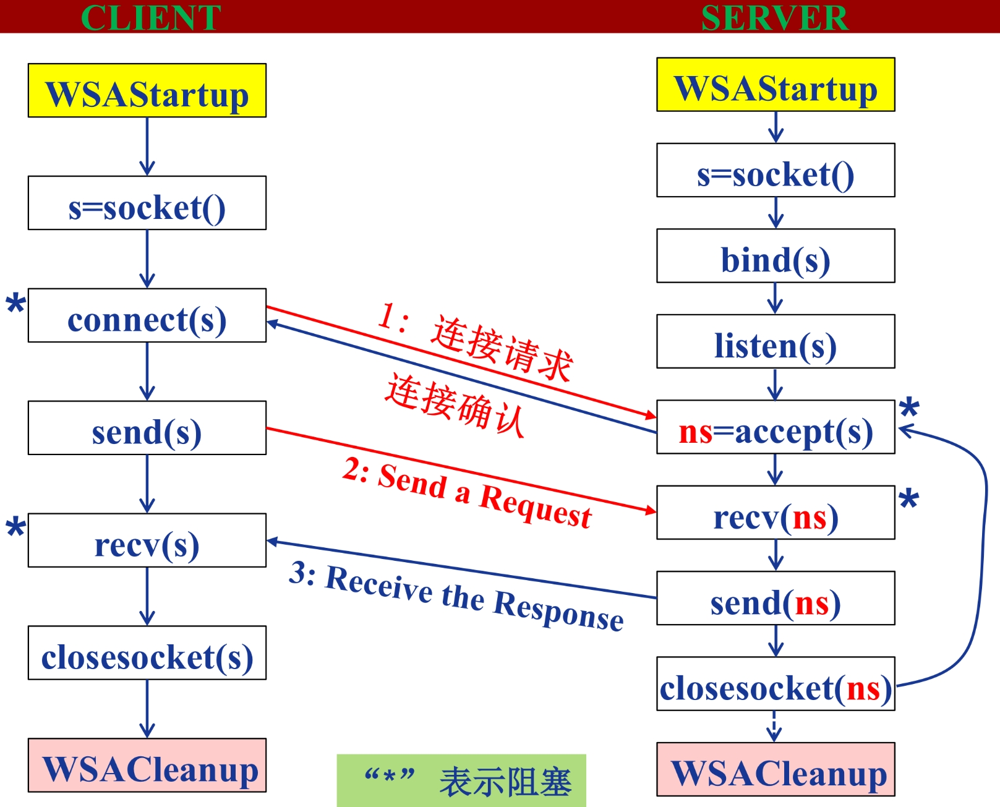

Socket编程
Python 提供了两个级别访问的网络服务：
- 低级别的网络服务支持基本的 Socket，它提供了标准的 BSD Sockets API，可以访问底层操作系统Socket接口的全部方法
高级别的网络服务模块 SocketServer， 它提供了服务器中心类，可以简化网络服务器的开发。
Python 中，我们用 socket() 函数来创建套接字，语法格式如下：
socket.socket([family[, type[, proto]]])
参数
- family: 套接字家族可以使AF_UNIX或者AF_INET
- type: 套接字类型可以根据是面向连接(TCP)的还是非连接(UDP)分为SOCK_STREAM或SOCK_DGRAM
protocol: 一般不填默认为0.
Python3.5.x socket只能收发字节内容，Python2.7可以直接发送字符串

服务端代码 server.py：
import socket
#初始化socket
s = socket.socket(socket.AF_INET, socket.SOCK_STREAM)
host = 'localhost'
# host = socket.gethostname() #获取本地主机名
port = 8001 设置端口号
s.bind((host,port)) #服务端绑定主机和端口
s.listen(5) #等待至多5个客户端连接
while True:
connection,address = s.accept()
connection.send('Hello world!'.encode('utf-8'))
connection.close()
客户端代码 client.py:
import socket
s = socket.socket(socket.AF_INET, socket.SOCK_STREAM)
host = 'localhost'
#host = socket.gethostname()
port = 1234
s.connect((host,port))
print(s.recv(1024).decode('utf-8'))
s.close()
现在我们打开两个终端，第一个终端执行 server.py 文件：python server.py
第二个终端执行 client.py 文件：python client.py
输出：Hello World!
这时我们再打开第一个终端，就会看到有以下信息输出：
连接地址： ('127.0.0.1', 62461)
Web 应用服务
#!/usr/bin/env python
#coding:utf-8
import socket
def handle_request(client):
buf = client.recv(1024)
client.send("HTTP/1.1 200 OK\r\n\r\n".encode('utf-8'))
client.send("Hello, World".encode('utf-8'))
def main():
sock = socket.socket(socket.AF_INET, socket.SOCK_STREAM)
sock.bind(('localhost',8080))
sock.listen(5)
while True:
connection, address = sock.accept()
print(connection,address)
handle_request(connection)
connection.close()
if __name__ == '__main__':
main()
打开浏览器发现